Upacara Adat Mantu
Mantu ditegesi nduwe gawe kanggo ngumah-umahake putra/putrine kang wis diwasa.
Diarani ngumah-umahake amarga nyawijikake putrine karo jejaka lan manggon bareng ing
salah sawijining panggonan (tunggal omah) lang urip bebarengan ing tengah-tengah
masarakat
Rerangken/urut-urutane adicara mantu:
Note:
CPK = Calon Penganten Kakung
CPP = Calon Penganten Putri
PK = Penganten kakung
PP = Penganten Putri
A.Pra Acara
- 1. Nontoni
Keluarga CPK ngutus/nugasi salah sijining wakil keluarga kang diarani congkok kanggo sowan marang daleme CPP saperlu takon utawa nggoleti sisik melike CPP. - 2. Lamaran
Keluarga CPK sowan marang daleme CPP kanggo ngrembug bab katresnan antarane putra putrine. - 3. Paningsetan
Keluarga CPK sowan marang daleme CPP lan nggawa paningset arupa kalpika(cincin). - 4. Asok tukon Keluargane CPK menehi asok arupa dhuwit utawa liyane kanggo mbantu keluargane CPP.
- 5. Gethok dinten Nemtokake/nggethokake dina kanggo ijab lan resepsi
B.Adicara inti
- 1. Pasang tratag lan tarub
Pasang tratag lan diterusake masang tarub. Cirine tarub yaiku digawe saka godhong- godhongan,janur,kembang,buah-buahan kang maneka warni. Tarub nduwe teges ditata supaya murub. Ateges kanggo tenger/tandha bilih wong kang masang lagi duwe gawe. - 2. Kembar mayang
Sawise masang tratag lan tarub diterusake kanthi nyiapake kembar mayang. Kembar mayang gagrak Surakarta digawe saka janur, dene kembar mayang gagrak Yogyakarta digawe saka godhong-godhongan lan janur. - 3. Siraman
Siraman yaiku adicara kang ditindakake sedina sadurunge ijab. Siraman nduwe makna supaya ngresikake calon penganten sengga bisa resik lair lan batine. Penganten disirami nggunakake banyu pitung (7) sumber lan kembang setaman kang diwadhahi bokor kencana. Banjur penganten disirami kaping pitu (7) dening para sesepuh lan pini sepuhe,anggone nyirami nggunakake siwur. Angka pitu (7) nduwe pangarep-arep supaya calon penganten tansah oleh pitulungan. - 4. Midodareni
Midodareni yaiku adicara kang dileksanakake sewengi sadurunge ijab. Midodareni asale saka tembung widodari (bidadari) amarga nduwe mitos saka ceritane Dewi Nawang Wulan lan Jaka Tarub. Nalika adicara midodareni, CPP dipingit lan ora kena ketemu karo wong lanang kejaba karo sedulure dewek. Banjur CPK lan keluargane sowan karo nggawa srah-srahan kang awujud busana sepengadeg lan dedhaharan. CPP uga menehi angsul-angsul arupa busana kancing gelung kanggo CPK. - 5. Ijab
PK ngucapake sumpah/janji ing sangarepe pengulu, saksi, lan keluargane - 6. Panggih
Adicara panggih kaperang dadi 2 yaiku gagrak Surakarta lan Yogyakarta. Andharan kang luwih jangkep ana ing ngisor iki
| No | Gagrak Surakarta | Gagrak Yogyakarta |
|---|---|---|
| 1. | Tebusan Pisang sanggan | - |
| 2. | Liru Sekar Kembar Mayang | Kepyok Sekar Kembar mayang |
| 3. | Balangan Gantal | Balangan Gantal |
| 4. | Midak Antiga/tigan | Wiji dadi |
| 5. | Ranupada | Ranupada |
| 6. | Sindur Binayang | Kirab |
| 7. | Bobot timbang | - |
| 8. | Kacar kucur | Tampa Kaya |
| 9. | Dhahar Klimah | Dhahar Klimah |
| 10. | Ngunjuk Toya Wening | Ngunjuk Toya Wening |
| 11. | Mapag Besan | - |
| 12. | Sungkeman | Sungkeman |
Keterangan
| No. | Gagrak Surakarta | Gagrak Yogyakarta |
|---|---|---|
| 1. | Tebusan Pisang sanggan Wong tuwane PK menehake pisang sanggan marang wong tuwane PP. maknane yaiku wong tuwane PK wis siap nyangga uripe PP. |
- |
| 2. | Liru Sekar Kembar Mayang Para juru ampil kembar mayang padha maju lan ngijolake kembar mayang kang digawa. Maknane yaiku keluarga saka CPK lan CPP wis padha-padha bisa nampa kekurangan lan kaluwihan saka keluargane. |
Kepyok Sekar Kembar mayang Para juru ampil kembar mayang maju kanggo ngepyokake kembar mayang ing badane penganten. Maknane yaiku kanggo tolak bala utawa mbuwang siyal. |
| 3. |
Balangan Gantal Penganten sarimbit balang-balangan gantal. Gantal digawe saka godhong suruh kang ditaleni benang putih. Godhong suruh kang digawe kudu kang matemu ros-e, bab kasebut nduwe pralambang bilih senajan penganten nduwe cipta, rasa, karsa kang beda menawa wis ditaleni ikatan pernikahan kudu bisa tunggal cipta,rasa lan karsa. Gantal kang digunakake cacahe 7. CPK nggawa 4, CPP nggawa 3. |
|
| 4. |
Midak Antiga/tigan Penganten kakung midak tigan/endhog. Bab kasebut nduwe makna supaya penganten enggal pikantuk putra/momongan. |
Wiji dadi Tigan/endhog ditempelake ing bathuke penganten. Bab kasebut nduwe makna supaya penganten enggal pikantuk putra/momongan. |
| 5. |
Ranupada PP mijiki samparane PK. Nduwe makna bilih PP kudu ngabekti marang PK |
Wiji dadi Tigan/endhog ditempelake ing bathuke penganten. Bab kasebut nduwe makna supaya penganten enggal pikantuk putra/momongan. |
| 6. |
Sindur Binayang Adicara nalika mlaku marang sasana rinengga. Penganten dikrubungi nganggo kain sindur. Bapake PP nuntun saka ngarep lan ibune PP ndherekake saka mburi. Maknane yaiku senajan putra-putrine wis mbangun bale wisma (rumah tangga) wong tuwa bakal tetep menehi conto lan support kanggo putra-putrine |
Wiji dadi Tigan/endhog ditempelake ing bathuke penganten. Bab kasebut nduwe makna supaya penganten enggal pikantuk putra/momongan. |
| 7. |
Bobot timbang PK lan PP dipangu ing wentise bapake PP. Maknane yaiku wong tuwa ora mbedak-mbedakake anak-anake. |
- |
| 8. |
Kacar kucur (S)/ Tampa Kaya (Y) PK asok kaya marang PP kang arupa kacang kawak dhele kawak lan PP nampani saka ngisor. Maknane yaiku PK kudu siap maringi nafkah marang PP. Lan PP kudu bisa nduwe watak gemi, setiti, ngati-ati menawa nggunakake nafkah saka PK. |
|
| 9. |
Dhahar Klimah Penganten padha dulang-dulangan. Pirantine yaiku sega kuning lan ati. Sega kuning pralambang murah sandhang pangan. Ati pralambang antep, yaiku anggone mbangun bale wisma (rumah tangga) kanthi ati kang mantep. |
|
| 10. |
Ngunjuk Toya Wening Penganten sarimbit ngunjuk banyu bening kang nduwe makna bilih PK lan PP anggone mbangun bale wisma (rumah tangga) linambaran ati kang bening. |
|
| 10. |
Ngunjuk Toya Wening Penganten sarimbit ngunjuk banyu bening kang nduwe makna bilih PK lan PP anggone mbangun bale wisma (rumah tangga) linambaran ati kang bening. |
|
| 11. |
Mapag Besan Wong tuwane PP marani/mapag wong tuwane PK kanggo lungguh sesarengan ing sasana rinengga. |
- |
| 12. |
Sungkeman Penganten sarimbit sungkem marang wontuwane. Maknane yaiku senajan wis mbangun bale wisma dewek, penganten kudu tetep ngabekti marang wong tuwane. |
- |
C.Pasca adicara
- 1. Boyong penganten
PP dipindhah/diboyong/digawa menyang omahe PP - 2. Ngundhuh mantu
Keluwargane PK ngundhuh anggota keluwarga anyar.
| 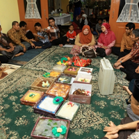 | Lamaran iku kalebu ing pra acara adicara mantu. Ing adicara iki wong tuwane calon manten kakung sowan marang daleme wong tuwane calon manten putri saperlu nembung. |
|
Paningsetan utawa Tunangan iku dianakake menawa kulawarga calon manten wis padha sarujuk bab jejodhoane anak-anake. Dianakake sadurunge adicara inti kanggo nunggu tempuking gati (hari-H) Maknane: supaya calon manten bisa padha-padha njaga sesrawungane sadurunge rabi. Piranti : kalpika (cincin) |
|
| 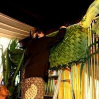 |
Pasang Tarub/Bleketepe yaiku wong tuwane ccalon manten putrid pasang anyaman janur lan tetuwuhan ing sangarepe omah (gapuraning omah).
Maknane: wong tuwane ccalon manten putrid wis siyaga nganakake khajat mantu kanggo anake. Piranti: anyaman janur lan tetuwuhan (tanaman), tebu, kambil, pari, lsp. |
| 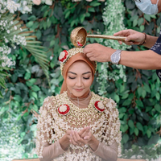 |
Siraman : Manten kakung lan putrid, sadurunge tempuking gati (hari H) nglakoni adicara siraman.
Maknane : kanggo ngresiki lair lan batine calon manten lan ngilangi sukerta. Piranti : siwur (gayung), bokor (bejana), banyu pitung sumber, kembang setaman |
| 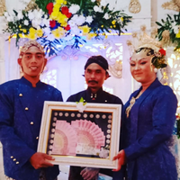 |
Srah-srahan : calon manten kakung dipasrahake supaya dinikahake ing daleme ccalon manten putri. Manten kakung biasane nggawa ubarampe kang dipasrahake marang calon manten putri. Midodareni : Sawise aadicara srah-srahan, calon manten putri didandani ayu kaya widadari, durung oleh ketemu karo calon manten kakung. Sing oleh niliki mung kulawarga putrid saka manten kakung kayata ibu ne manten kakung, budhene, bulik, lsp. Piranti : busana sapengadeg kanggo calon manten putri, jenang, pisang sanggan, lsp. |
| 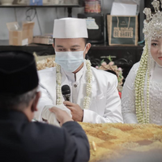 |
Ijab Kabul : Ijab Kabul ditindakake dening calon manten kakung lan bapake calon manten putri. Iki minangka sarat syahe nikah. |
| 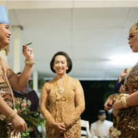 |
Panggih Balangan Gantal : manten ditemokake sawise ijab Kabul, adicara sepisanan yaiku balangan gantal. Manten padha mbalangake gantal (lintingan suruh) kang ditaleni. Maknane : manten ketemu jodhone (mbalangake gantal marang wong kang wis dipilih/nibakake pilihan), suruh ditaleni maknane wong loro mau wis kaiket talining jodho. Piranti : gantal (lintingan suruh kang ditaleni) |
| 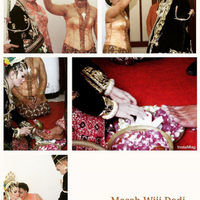 |
Mecah wiji aji/Midak antiga/Midak endhog: Adicara kang intine mecahake endhog/netesake endhog. Jogja:endhog dipecah dening juru paes, Solo:endhog dipidak manten kakung. Maknane: Supaya manten samengko diwenehi keturunan kang becik/aji. Piranti: endhog |
 |
Ranupada/Mijiki sikil: manten putrid mijiki/ngumbah sikile manten kakung. Maknane: Tandha bektine manten putri marang manten kakung |
| 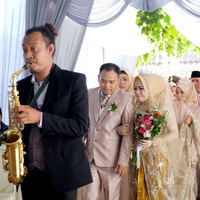 | Sinduran & Kirab : Manten putrid lan kakung digawa marang sasana rinengga (pelaminan). Solo: Sinduran, manten loro dikrukubi kain sindur lan digawa ing sasana rinengga dening Bapake manten putri. Jogja: Kirab, manten loro diarak tumuju sasana rinengga (pelaminan). |
| 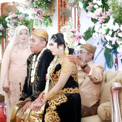 |
Bobot timbang: Manten kakung lan putri dipangku dening bapake maten putrid. Maknane: Wong tuwa ora mbedakake antarane anake dhewe utawa mantune. Kabeh wis dianggep dadi anake dhewe. |
| 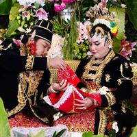 |
Kacar-kucur & Tampa kaya: manten kakung nyuntakake beras, kaya, dhuwit, lsp banjur ditampani dening manten putrid. Maknane : Manten kakung kuwi duwe kewajiban nyukupi uripe kulawarga. Manten putrid kudu bisa nampa lan ngecakke (memanage). Piranti: kaya, beras, lsp |
 |
Dhahar Klimah: Manten putri lan kakung dhahar bebarengan. Solo:dulang-dulangan. Jogja:manten kakung nyiapake dhaharan wujud kepelan banjur didhahar manten putrid. Maknane: Menawa wis urip bebarengan, sak anane kudu bisa dipangan bebarengan, susah seneng dirasakake bareng. Ngunjuk toya wening: Manten kakung lan putrid ngunjuk toya pethak/bening. Maknane: Menawa ana masalah, kudu bisa diadhepi kanthi pikiran kang wening (pikiran jernih). |
| 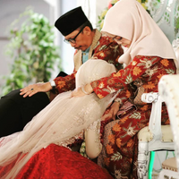 | Sungkeman: Manten putri lan kakung sungkem marang wong tuwa lan mertua. Maknane: Tandha bekti manten marang wong tuwa |